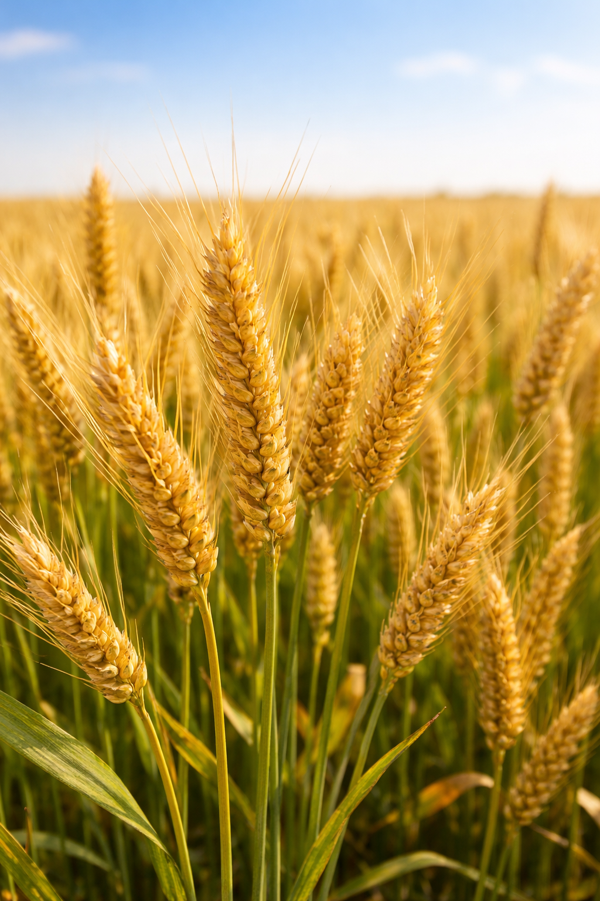
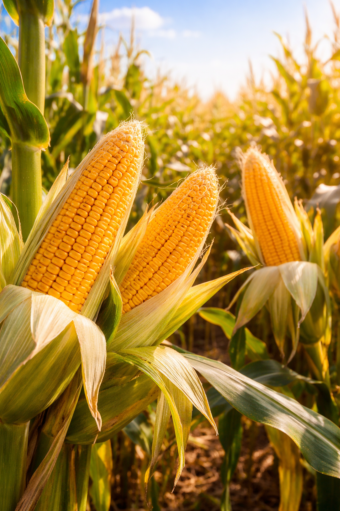
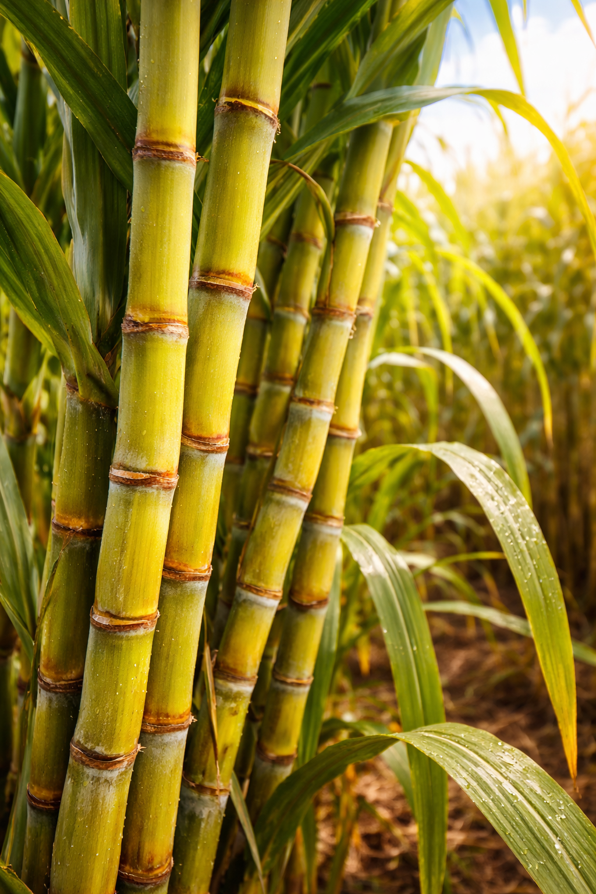

Wheat
Rabi Crop — PakistanWheat is Pakistan's most important staple food crop, contributing significantly to food security and the national agricultural economy. Grown across Punjab, Sindh, and KPK, wheat farming requires proper pest management, weed control, and timely fertilization. Agrinova provides a complete range of insecticides, fungicides, weedicides, and fertilizers specifically formulated to protect wheat crops and maximize yield across Pakistan.
- Weedicide solutions to control grassy and broadleaf weeds in wheat fields
- Fungicides for rust and powdery mildew control in wheat crops
- Fertilizers to improve wheat grain quality and farm yield

Cotton
Cash Crop — PakistanCotton is Pakistan's most valuable cash crop and the backbone of the textile industry. It is highly vulnerable to pests like bollworm, whitefly, aphids, and jassids, requiring intensive crop protection throughout the growing season. Agrinova offers a comprehensive portfolio of insecticides, miticides, and fertilizers designed specifically for cotton farming in Punjab and Sindh to ensure healthy plants and high-quality fiber production.
- Bollworm and whitefly control insecticides for cotton crops
- Sucking pest management — aphids, jassids, and thrips
- Nutrition solutions for improved cotton fiber quality and yield

Maize
Kharif Crop — PakistanMaize is one of Pakistan's fastest-growing crops, widely cultivated for food, animal feed, and industrial purposes. It is a high-value Kharif crop grown in Punjab, KPK, and Sindh. Maize requires effective weed management, stem borer control, and balanced fertilization for optimal yield. Agrinova provides specialized herbicides, insecticides, and fertilizers to help Pakistani maize farmers achieve maximum productivity and profitability.
- Pre and post-emergence herbicides for maize weed control
- Stem borer and cutworm insecticides for maize crop protection
- Fertilizers to boost maize grain size and farm yield

Sugarcane
Industrial Crop — PakistanSugarcane is a vital industrial crop in Pakistan, used for sugar production, ethanol, and renewable energy. Grown primarily in Punjab and Sindh, sugarcane farming demands consistent pest control, proper weed management, and balanced soil nutrition throughout its long growing cycle. Agrinova supplies granular insecticides, herbicides, and specialized fertilizers to help sugarcane farmers across Pakistan protect their crop and achieve high sugar recovery and yield.
- Granular insecticides for stem borer and root pest control in sugarcane
- Weedicide solutions for clean sugarcane fields and better growth
- Fertilizers to improve sugarcane stalk quality and sugar recovery